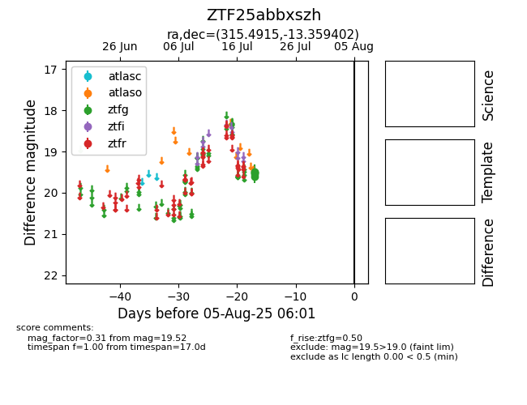

Target ZTF25abbxszh at 2025-08-05 06:01, see:
FINK: fink-portal.org/ZTF25abbxszh
Lasair: lasair-ztf.lsst.ac.uk/objects/ZTF25abbxszh
ALeRCE: alerce.online/object/ZTF25abbxszh
alt names
ZTF25abbxszh (ztf,fink)
coordinates:
equatorial (ra, dec) = (315.4915,-13.35940)
galactic (l, b) = (35.2796,-34.91009)
photometry
last ztfg=19.52
5 ztfg detections
